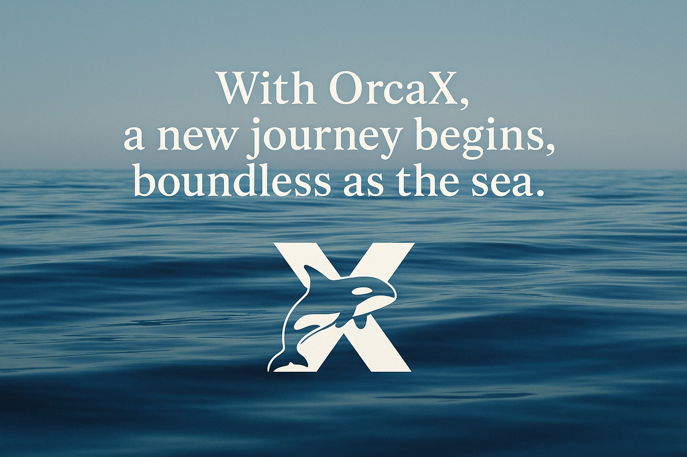
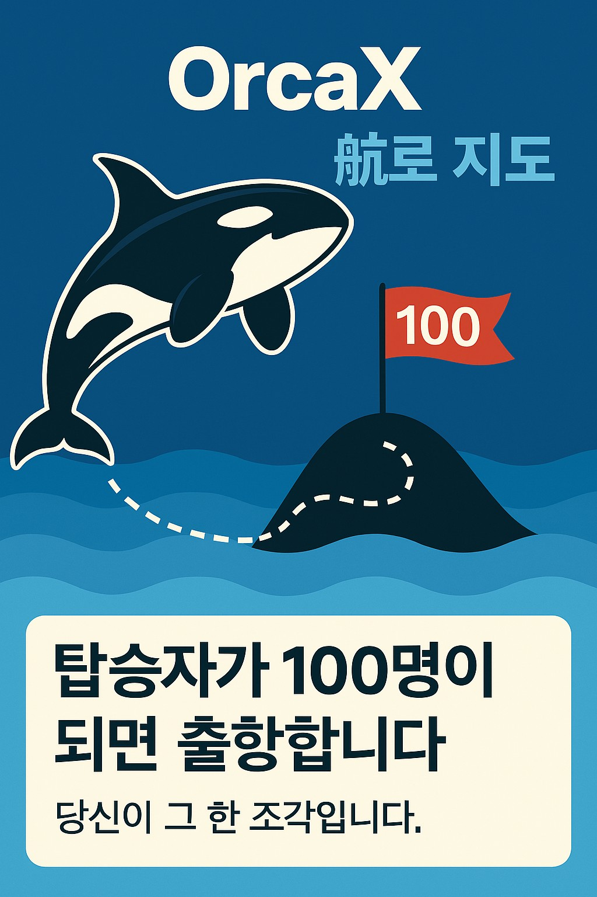

전설의 완성
전설은 그렇게 퍼즐 하나로 기억된다.
우리는 1조각씩 맞춰왔습니다.
처음엔 아무것도 보이지 않았던 이야기들이,
조각 하나하나에 비전과 감정, 의미를 담아
이제 하나의 완성된 그림으로 드러났습니다.
이 퍼즐은 단순한 그림이 아닌, 항해의 기록이며
수많은 선택, 도전, 연대, 신념이 모여 탄생한
살아있는 전설입니다.
전설은 거창한 사건이 아니라,
그저 매일 이어진 여정과 작은 선택들의 기록입니다.
그리고 그 전설은
이제 당신의 이야기가 되어 세상에 퍼져나갑니다.

